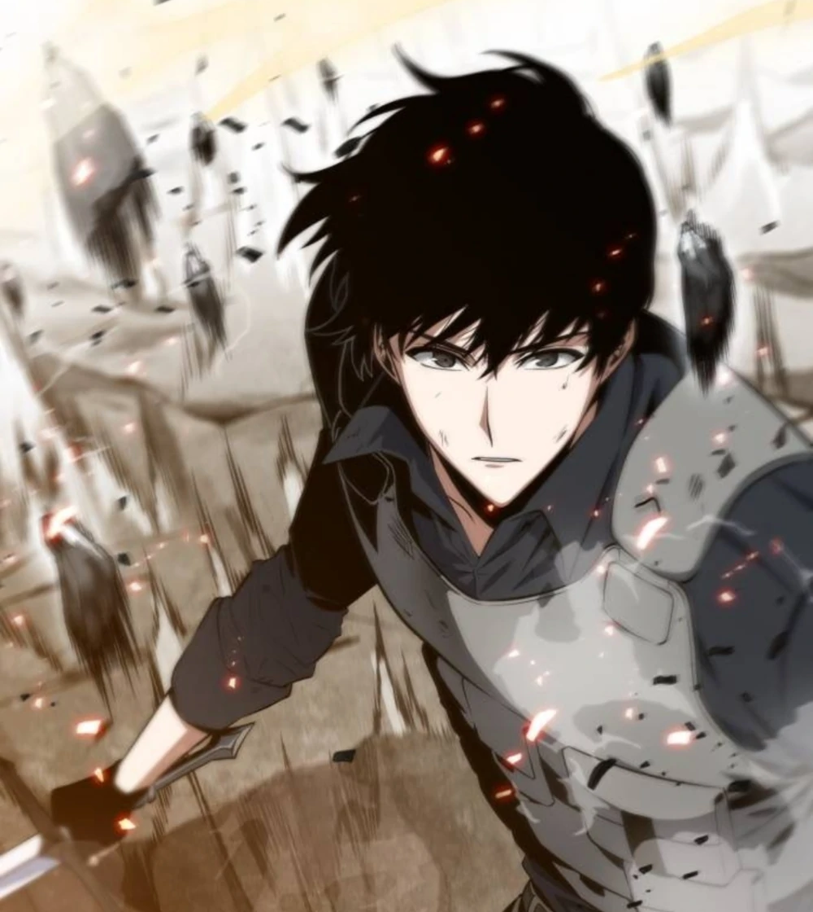
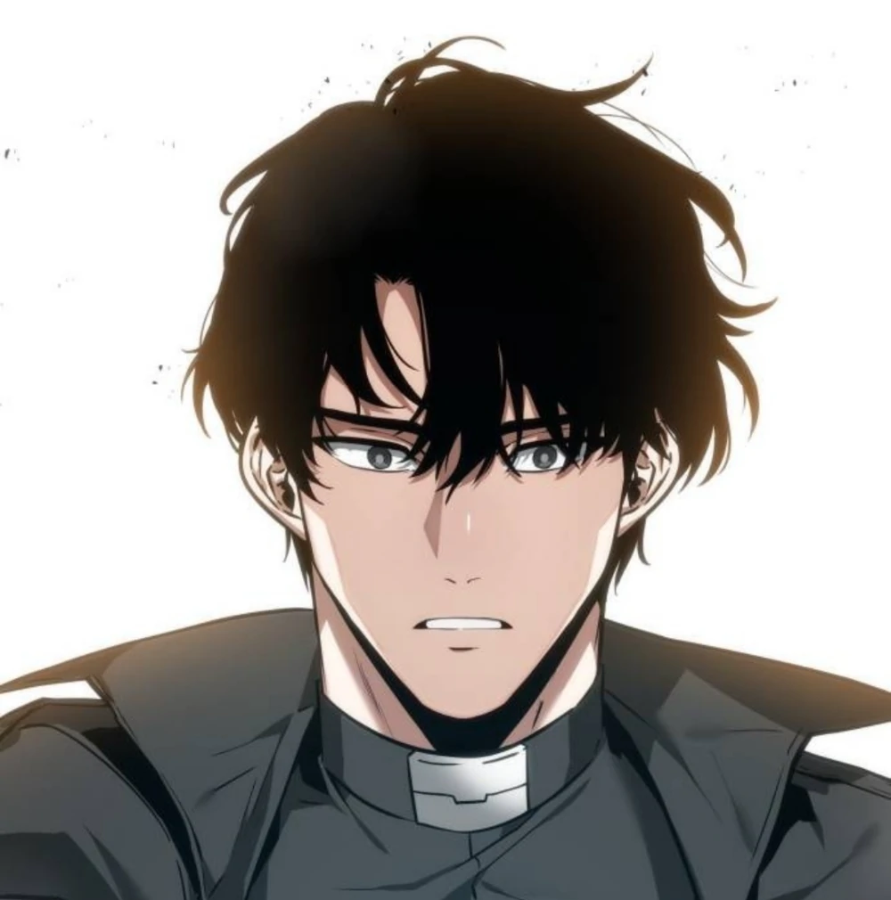
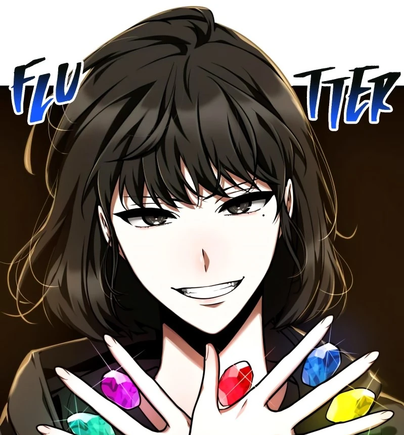

Omniscient Reader's Viewpoint (Omniscient Reader, or ORV) is an apocalyptic fantasy story, written by Sing Shong.
Kim Dokja, an ordinary salary worker, has been the sole reader of a fantasy webnovel called "Three Ways to Survive the Apocalypse" for over a decade. However, as the apocalypse begins, he soon finds that his favourite novel has become a reality - and he is the only one with the knowledge to change the fate of the world.

Kim Dokja: The Reader
Kim Dokja is an ordinary salary worker, who finds that his favourite webnovel "Three Ways to Survive the Apocalypse" has become a reality. Being the only reader of the novel, he has exclusive knowledge of the events and scenarios that will soon take place on Earth. He has no supporting constellation.

Yoo Joonghyuk: The Protagonist
Yoo Joonghyuk is the original protagonist of "Three Ways to Survive the Apocalypse". His special attribute is that he is a regressor - whenever he dies, he restarts at the beginning of the scenarios, while keeping all his memories from the last world. His supporting constellation is a mystery.

Han Sooyoung: The Writer
Han Sooyoung was a highly-popular webnovel author, before the start of the apocalypse. She is often referred to as the "Copy-Cat Author" or a plagiarist, due to the alarming similarities between her works and other novels. Her supporting constellation is the 'Abyssal Black Flame Dragon'.